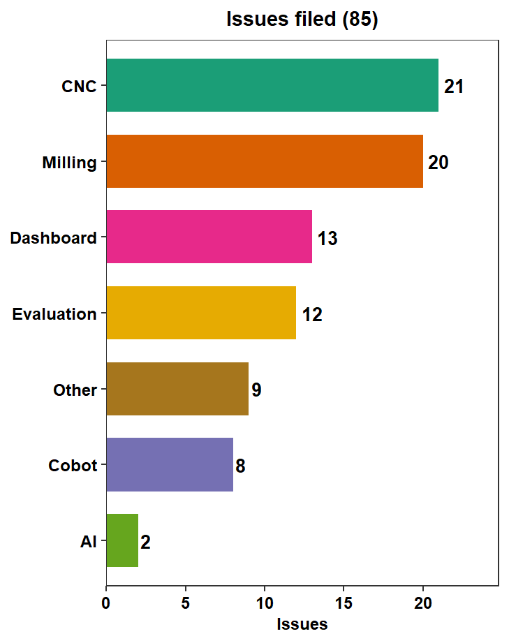
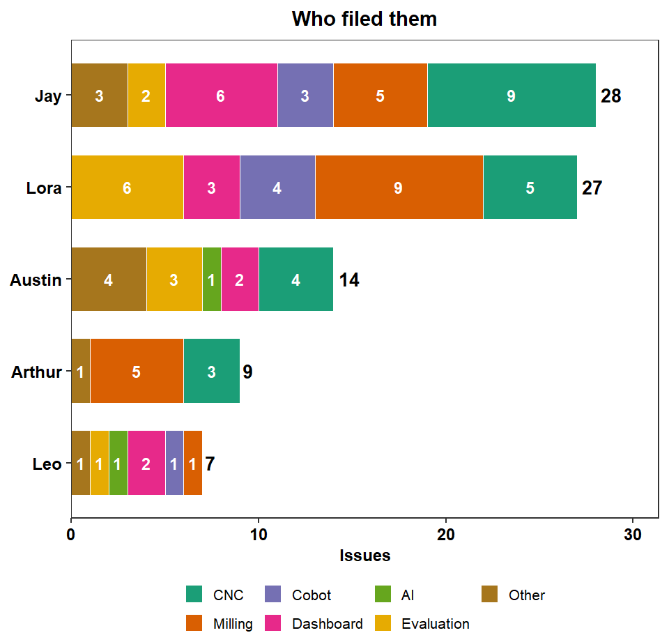
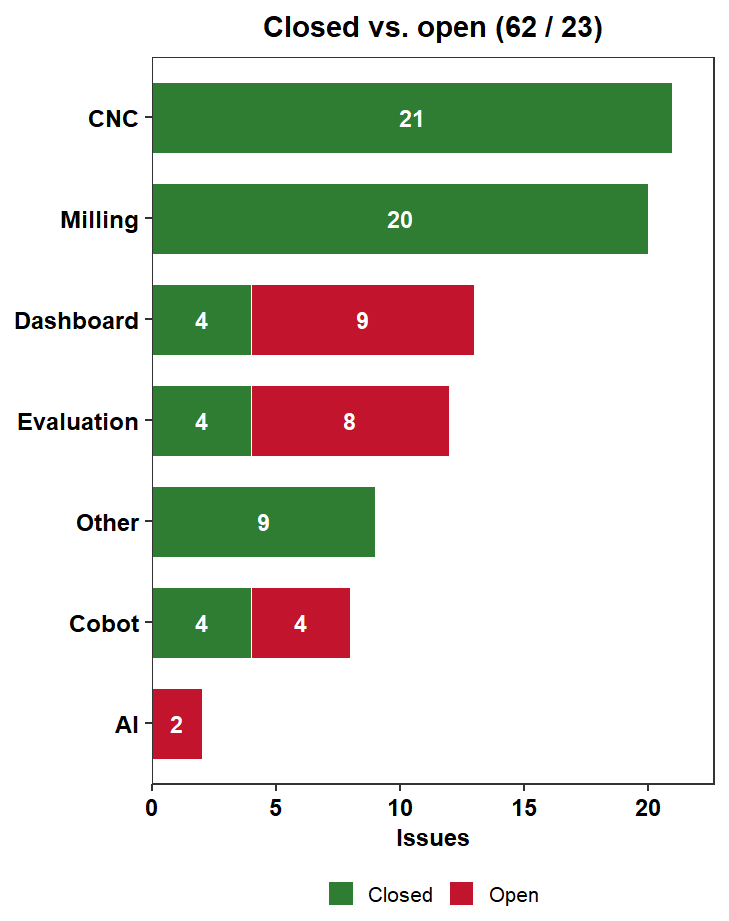
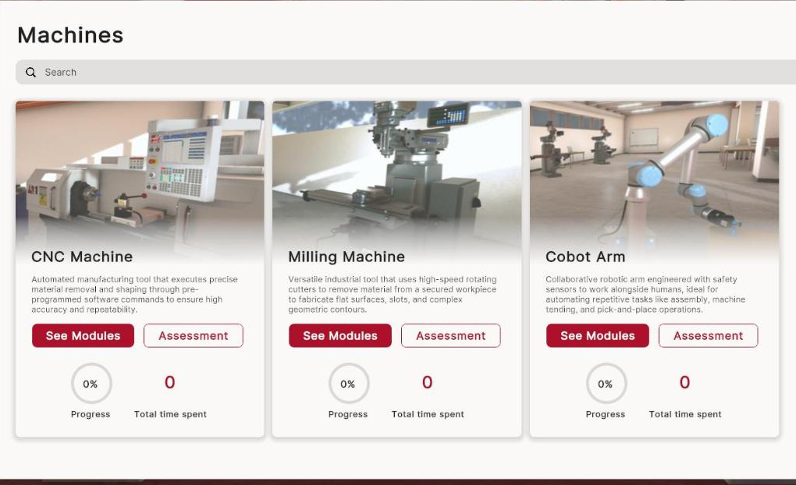
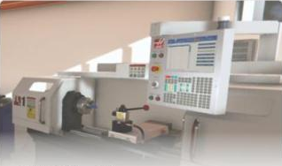
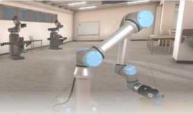
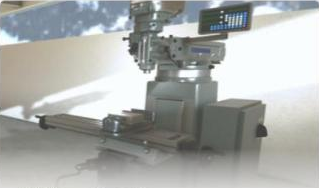
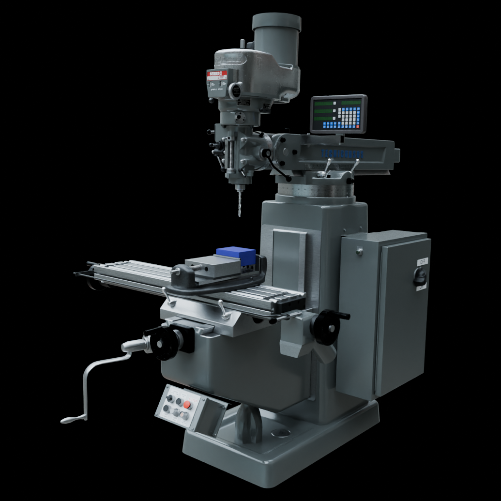

SIGHT: Safety Immersion and Gamified Hazard Training for Industry 5.0
Meeting 25: VR Release Path, AR Machine SOPs, MaxByte Update, and the Immersive-Environment Testing Protocol
September 04, 2026
Meeting Goals
1
2
3
4
5
6
7
1 · 2 min
Minutes and action items
Fadel
2 · 5 min
Administrative updates
Fadel: BWC status, three new team members, Safety 2027
3 · 15 min
Technical updates
Arthur: WebVR at sightvr.org
Michael and AM Hub subteam: machine SOPs for AR
Michael and AM Hub subteam: machine SOPs for AR
4 · 15 min
Industry partner
Ram: MaxByte developments in the AM Hub
5 · 15 min
Miami-Lora closed session
Austin: environment status
Lora: experimental protocol
Lora: experimental protocol
6 · 5 min
Risk log
All
7 · 3 min
Wrap-up
Action items, next steps
Sixty minutes in seven blocks; block widths are proportional to the minutes allotted in the agenda.
Recap: What We Covered in Meeting 24 (Aug 7)
Administrative / BWC
- BWC accepted the Year 1 interim report; July documents submitted on schedule.
- Q4 invoice fully processed and approved.
- Q5 report due Oct 9; BWC review Oct 21/22; 4-slide executive deck due Oct 11.
- OSC 2027 abstract (Columbus, Mar 16 to 19, 2027): live demo vs. AI safety workshop format.
Hiring
- Wissam Nusair joining for AM Hub operations; Lindsay Stevenson (MSBA) onboarding.
- Three more students targeted, two based at the Hamilton hub.
Student-led technical updates
- Michael: thesis proposal on smart-manufacturing machine safety; sensor matrix for the UR5e, Haas CNC, and Bridgeport mill. Feedback: near-misses and caught-by incidents, Hierarchy of Hazard Controls.
- Austin: AR environment progress.
- Leo: ROI and cost-benefit analysis paper with Jay and Ibrahim.
MaxByte
- Five-milestone delivery approach; Milestone 1 design documentation complete.
- Deliverables now go to the MU-maintained shared Google Drive.
Action Items from Meeting 24
| Responsible Party | Action Item | Due Date | Status |
|---|---|---|---|
| Fadel / Team | Submit OSC 2027 abstract and select presentation format | Aug 8, 2026 | ✓ Done: presentation #2268, Using GenAI to Develop Training Materials (WSIC) |
| Fadel / HR | Finalize hiring paperwork for Lindsay Stevenson (MSBA) | Aug 15, 2026 | ✓ Done |
| Michael Wise | Refine thesis proposal slides (near-misses and caught-by focus) | Aug 14, 2026 | |
| Leo | Complete mathematical framework for the ROI/CBA paper | Aug 14, 2026 | |
| Fadel / Team | Prepare Q5 BWC executive deck (4 slides) | Oct 11, 2026 |
Meeting 24 Minutes
Administrative Updates
Fadel Megahed
Status of BWC Deliverables and Requirements
- Accepted by BWC: Year 1 interim (full-year) progress report, Deliverable 8.1 (Jul 17, 2026).
- Submitted: July / August project team documents (Sep 11, 2026 deadline).
- Ahead: the Q5 cycle, with emphasis on functional AR milestones.
Sep 1
Oct 31
Today
Sep 4
Sep 4
Oct 2
Q5 report: team draft due
Next up
Q5 report: team draft due
Next up
Oct 9
Q5 quarterly progress report to BWC
Due
Q5 quarterly progress report to BWC
Due
Oct 11
Q5 executive deck (4 slides)
Due
Q5 executive deck (4 slides)
Due
Oct 21 / 22
BWC Q5 review meeting; formal submission
Scheduled
BWC Q5 review meeting; formal submission
Scheduled
Welcome: Lindsay Stevenson (Student Research Assistant)
- Role at Miami: Master of Science in Business Analytics candidate, Farmer School of Business; Miami graduate with degrees in business analytics and sport communication and media.
- SIGHT Project Role: Student research assistant supporting project analytics and documentation.
- Skills: Python, R, SQL, Power BI, and Tableau; predictive modeling and data visualization.
- Beyond the classroom: Communications roles with Miami RedHawks Athletics, including sports-information duties for golf, baseball, and field hockey.
Lindsay, in your own words: what drew you to the project?
Source: LinkedIn profile.
Welcome: Wissam Nusair (Student Research Assistant)
- Role at Miami: Miami University student; research assistant at Miami since August 2026.
- SIGHT Project Role: Supports AM Hub operations, lab setup, and physical-lab logistics at the Hamilton campus.
- Experience:
- Data science intern, Fifth Third Bank (2026).
- Data science intern, Procter and Gamble (2025).
- Lead developer, WNusair Software (2023 to 2025).
- Leadership: Chief Information Officer of the INTERalliance of Greater Cincinnati, the largest student-run IT organization in the country.
Wissam, in your own words: what drew you to the project?
Source: LinkedIn profile.
Welcome: Abby Helsinger (Discovery Center Evaluation Team)
- Role at Miami: Senior Research Associate, Discovery Center (since summer 2022).
- SIGHT Project Role: Joins Kristen and Yue on the external evaluation team for Year 2.
- Education:
- M.S., Exercise and Health Studies (healthy aging focus), Miami University.
- B.S., Health and Sport Studies with a minor in Gerontology, Miami University.
- Currently pursuing a Ph.D.
- Background:
- Fifteen years with local and national non-profits on healthy living and chronic-disease prevention programs.
- Senior Research Associate at the Scripps Gerontology Center (2020 to 2022).
- Research interests: public health and policy, health behaviors, and equity.
Abby, in your own words: how will you be involved in the evaluation?
Source: Miami University profile.
Safety 2027 (ASSP): Finalizing the Submission
ASSP Safety 2027 Conference + Expo, New Orleans, June 7 to 9, 2027: safety.assp.org
Proposed title: The Role of Generative AI in Safety Training. Drafters: Fadel and Lora.
| Submission section | Status |
|---|---|
| 1. Title | Drafted |
| 2. Presentation description (up to 600 words) | Drafted |
| 3. Learning outcomes (1 to 3) | Revised today |
| 4. Topic relevance (up to 150 words) | Draft for review |
| 5. Biographical information (up to 600 words) | Draft for review |
| 6. Short session description (up to 50 words) | Draft for review |
The next four slides carry the OSC 2027 reference and the drafts for sections 3 to 6.
Safety 2027: What We Already Submitted to OSC 2027
Ohio Safety Congress 2027
- Columbus, OH, March 16 to 19, 2027.
- Presentation #2268.
- Title: Using GenAI to Develop Training Materials (WSIC).
- Submitted Aug 8, 2026 (500-character limit).
The Safety 2027 drafts reuse this framing and extend it with the learning objectives and case-study detail on the next slides.
OSC abstract (as submitted):
Generative AI and gamification can allow for adaptable and engaging training materials. We will highlight the advantages and limitations of generative AI within the context of safety training and the integration with VR and AR training modalities. We will present a case study on the development and deployment of a conversational training chatbot and other systems that have been evaluated.
Safety 2027: Learning Objectives (Section 3)
Attendees will be able to:
1
Explain how generative AI can inform the creation of safety training materials.
2
Use generative AI to create safety training materials.
3
Compare and evaluate different approaches for retrieving and generating AI-grounded information.
These replace the two outcomes in the Aug 3 starter file. They move from awareness (explain) to practice (use) to judgment (compare and evaluate), which matches the description’s promise of a practical roadmap and the chatbot retrieval-grounding case study.
Safety 2027: Drafts for Sections 4 and 6
4. Topic relevance (limit 150 words)
Ineffective, one-time onboarding training remains a systemic risk identified by the National Safety Council’s Work to Zero initiative. Safety professionals are now asked to train a workforce on a mix of decades-old and newly automated equipment, while generative AI tools arrive faster than guidance on how to use them responsibly. This session gives attendees a grounded, evidence-based view: where generative AI reliably helps in creating and updating training materials, where it fails, and how to verify AI-generated safety content against manufacturer manuals and OSHA requirements. Drawing on an Ohio BWC-funded project that is deploying a safety chatbot, VR modules, and AR guidance in a manufacturing training hub, we translate research results into steps attendees can apply immediately, regardless of facility size or technology maturity.
6. Short session description (limit 50 words)
Generative AI and gamification can make safety training adaptive and engaging. We share what worked, and what did not, in building and evaluating GenAI-generated training materials, a conversational safety chatbot, and VR and AR training modules for manufacturing, with practical guidance for legacy and smart facilities alike.
Click into either draft to edit it live; edits persist in this browser and the word counts update as you type.
Safety 2027: Biographical Information (Section 5, Draft)
Combined limit 600 words
Fadel Megahed
Fadel M. Megahed, Ph.D., is the Raymond E. Glos Endowed Professor in Business and Professor of Information Systems and Analytics at Miami University’s Farmer School of Business, and was named a Miami University Faculty Scholar in 2023. His research applies artificial intelligence and statistical surveillance to problems in manufacturing, public health, and occupational safety and health, and has been supported by more than $2.7 million in grants and contracts from the NSF, NIOSH, the Ohio Bureau of Workers’ Compensation, P&G, Aflac, and GE Research. He has published 61 peer-reviewed journal papers, serves as Editor of the Case Study section of the Journal of Quality Technology, and received the 2025 Richard K. Smucker Teaching Excellence Award, the Farmer School’s highest teaching honor. He is the principal investigator of SIGHT (Safety Immersion and Gamified Hazard Training for Industry 5.0 Workers), funded by the Ohio BWC Worker Safety Innovation Center. He holds a Ph.D. and M.S. in Industrial and Systems Engineering from Virginia Tech and a B.S. in Mechanical Engineering from the American University in Cairo.
Lora Cavuoto
Lora Cavuoto, Ph.D., is Professor and Director of Undergraduate Studies in the Department of Industrial and Systems Engineering at the University at Buffalo. Her research spans physical ergonomics, occupational safety and health, and human factors in healthcare, including surgeon ergonomics. She received the American Society of Safety Professionals’ William E. Tarrants Outstanding Safety Educator Award in 2022, was named one of the National Safety Council’s Rising Stars of Safety in 2024, and received the Human Factors and Ergonomics Society’s HFE WOMAN Mentor of the Year Award in 2024. She serves as the safety consultant on the SIGHT project, where she leads the design of the usability and training-effectiveness evaluation of the VR and AR systems. She holds a Ph.D. and M.S. in Industrial and Systems Engineering from Virginia Tech, an M.S. in Occupational Ergonomics and Safety from the University of Miami, and a B.S. in Biomedical Engineering from the University of Miami.
Technical Updates
Arthur Carvalho, Michael Wise, and the AM Hub subteam
WebVR: Release Path to v1.0.0
Aug 7
Meeting 24
Meeting 24
Sep 1
Sep 22
Today
Sep 4
Sep 4
v0.5.0 · closed Aug 9
Milling module fixes
18 of 18
Milling module fixes
18 of 18
v0.6.0 · closed Aug 26
CNC (Haas TL-1) module fixes
20 of 20
CNC (Haas TL-1) module fixes
20 of 20
v0.7.0 · closed Aug 27
Navigation, auth, interaction
6 of 6
Navigation, auth, interaction
6 of 6
v0.8.0 · due Sep 6
"All machines are done. Cobot is the last one."
"All machines are done. Cobot is the last one."
4 of 8 closed
v0.9.0 · due Sep 13
"AI and dashboard are done"
"AI and dashboard are done"
2 of 13 closed
v1.0.0 · due Sep 20
"Evaluation is done"
"Evaluation is done"
4 of 12 closed
Live platform: sightvr.org. Tracker: private GitHub repository arthurgcarvalho/SIGHT-VR (85 issues logged; 62 closed, 23 open as of Sep 4, 2026). Milestone scope text quoted from the tracker.
WebVR: Issues Filed, Who Filed Them, and What Has Closed


Same 85 issues in all three charts, ordered by area total. 55 of the 62 closed issues were closed since Meeting 24 (Aug 7): milling spindle, power-feed, and end-mill guidance (v0.5.0); CNC control-panel, chuck-key, door, and PPE fixes (v0.6.0); in-module navigation and exit (v0.7.0); cobot PPE labels (v0.8.0). Source: SIGHT-VR GitHub tracker, exported Sep 4, 2026; issue #87 has no reporter tag and is counted under Arthur.
WebVR: Open Items on the Path to v1.0.0 (23 Issues)
v0.8.0: Cobot (4) Sep 6
- Visual guidance for assessment objectives (Leo)
- Run Program: clarify the workpiece measurement interaction (Jay)
- Run Program: clarify the
loop_test.urpselection instruction (Jay) - Generate Program: clarify or remove the
loop_test.urpfilename dependency (Jay)
v0.9.0: Dashboard and AI (11) Sep 13
- Show overall assessment completion (Jay)
- Rename Progress to Assessment progress (Jay)
- Separate learning and assessment actions and completion states (Jay)
- Add an indicator for learned modules (Jay)
- Standardize module names across machines (Jay)
- Move Take assessment button to the bottom (Jay)
- Correct partial module progress tracking (Leo)
- Align machine card action buttons (Lora)
- Show assessment history before 100% progress (Lora)
- AI: stop assuming users are wearing a VR headset (Austin)
- AI: handle generic greetings without assuming a machine context (Leo)
v1.0.0: Evaluation (8) Sep 20
- Show users where assessment mistakes occurred (Jay)
- Allow assessments to be completed per module (Jay)
- Validate Clean CNC assessment scoring (Lora)
- Cobot Generate Program assessment: remove instructional content (Lora)
- Cobot PPE module: remove Assessment bullets from two tooltips (Lora)
- Cobot PPE module: correct assessment grammar (Lora)
- Cobot PPE module (Lora)
Arthur: which of these are needed before Lora’s usability sessions, and which can slip past v1.0.0?
WebVR: Live at sightvr.org

AR Machine SOPs: Where Each Document Stands

Haas TL-1 CNC lathe
AR-ready structure
Fact-checked, picture-free operator SOP (Rev 1.0 draft, Aug 11) with 14 sections and three appendices, plus the illustrated 13-page lab SOP. Implemented in the AR build.
Door-interlock test record still TBD

UR5e cobot
AR-ready structure
Cobot SOP, AR edition: 8 modules, each split into AR System Guidance and Operator Procedure. Payload (1.130 kg), program name, and 4-foot boundary checks encoded as gates.

Bridgeport / Cincinnati mill
Needs expansion
One-page SOP: PPE, pre-run checklist, starting, shutdown, safety reminders. No AR guidance layer yet; manual-mill CAD parts (high-low lever, RPM adjuster) incomplete.
Living index
Equipment manuals, operation videos, safety procedures, and CAD documentation (Michael Wise): per machine, the manuals, CAD/STEP/STL files, annotation photos, and recorded videos on safety, startup, running, and parameters. Feeds both the AR build and the SOP fact-checks.
Machine images: SIGHT VR renders from sightvr.org. Documents by Michael Wise and the AM Hub subteam.
Haas TL-1 CNC Lathe: Illustrated Lab SOP
UR5e Cobot SOP in AR Form
1Set up the robot
2Power on
3Activate gripper
4Load program
5Run program
6Complete and stop
7Reposition
8Power off
Each module maps one-to-one to a recorded demo. Module 2 shown below.
| AR System Guidance (what the headset highlights, gates, and confirms) | Operator Procedure (what the trainee does) |
|---|---|
| Display the 4-foot safety boundary; highlight the orange floor line and the far side of the table. Block progress while the operator is inside the boundary. | Stay at least 4 feet from the robot: behind the orange line or on the far side of the table. |
| Highlight the red robot-status button; then ON; wait until the state reads Idle. | Tap the red button (bottom left), tap ON, wait for Idle. |
| Highlight the active payload field; if it does not read 1.130 kg, warn and block. | Verify the displayed active payload is 1.130 kg. |
| Highlight START; show a wait indicator through brake release; highlight Exit; confirm the status reads Normal. | Select Start, wait for initialization, select Exit. |
Before an SOP Enters the AR Build: The Fact-Check Flow
1. Candidate drafts
AM Hub source SOP and Use Case 1 (Jun 27)MaxByte SOP v1.0 (Aug 5)
Claude-generated draft (Aug)
›
2. Fact-check by Michael Wise (Aug 11)
Every step compared against the source hierarchy:a. Haas Lathe Operator's Manual (2018) and TL-1/2 online manual
b. Miami University safety and energy-control procedures
c. AM Hub TL-1 training materials
d. Earlier drafts
plus OSHA 29 CFR 1910.147 (LOTO) and 1910.212
›
3. Fact-checked SOP (Rev 1.0 draft)
14 sections, 11 recorded corrections (Appendix A), 10 items to verify before approval (Appendix B)
›
4. Release gate
Lab supervisor approves and documents that the door lock/interlock and all safety devices function.Owner, approver, and review interval assigned.
›
5. AR build
Steps become gated AR guidance
What the fact-check changed (5 of 11 corrections)
| Earlier claim | Disposition | Fact-checked rule |
|---|---|---|
| Press green power until a beep | Corrected | Press and hold [POWER ON] until the Haas logo appears; no beep criterion. |
| Door opening should stop the spindle | Corrected | Doors remain locked during Run/Setup motion; verify the interlock per the manual's periodic test. |
| Automatic turret/tool change | Corrected | The TL-1 has a manual quick-change tool post; changes require stopped motion. |
| Begin the first run at 100% feed | Removed | Use Graphics, Single Block, and supervisor-approved reduced overrides for an unproven program. |
| E-stop stops everything | Made precise | Stops axes, servos, spindle, and coolant; it does not isolate energy. LOTO does. |
Industry Partner Collaboration
MaxByte
MaxByte: Recent Developments in the AM Hub
Ram and the MaxByte team will share their slides on recent developments deployed in the AM Hub.
Live notes and questions:
Miami-Lora Closed Session
Immersive Environment Testing: MaxByte drops off here. Thank you, Ram.
Immersive Environment Status (Austin)
Austin will share his screen to present the current status of the environment, recent demos, and blockers.
Live notes and questions:
Experimental Design (Lora): Session Structure
Session 1
about 60 min
about 60 min
Baseline questionnaires
Demographics · Nordic safety climate · OSHA JHA quiz · Technology attitude
Demographics · Nordic safety climate · OSHA JHA quiz · Technology attitude
›
System orientation
›
Scenario 1
about 10 min
about 10 min
›
Scenario 2
about 10 min
about 10 min
›
Scenario 3
about 10 min
about 10 min
›
Post-session feedback
TAM usefulness and ease of use, open-ended
TAM usefulness and ease of use, open-ended
One-week washout, then Session 2 repeats orientation, three scenarios, and feedback in the other modality. Modality order is randomly assigned; every participant completes both VR and AR.
VR condition
- 27-inch monitor, mouse and keyboard (sightvr.org).
- Three scenarios, about 30 minutes total, on the safe operation of a piece of equipment: choosing PPE, placing machine guarding, setting up the machine.

AR condition
- Standing in front of the equipment; currently stated as using the Microsoft HoloLens.
- Three scenarios, about 30 minutes total, same task structure as VR.
Content: Lora Cavuoto, experimental design slides (Sep 2026). All questionnaires on paper; performance logged inside each system.
Experimental Design (Lora): Measures
| Measure | When | What it captures |
|---|---|---|
| Nordic Occupational Safety Climate Questionnaire | Baseline | Prior safety-training experience and safety attitudes. |
| OSHA Job Hazard Analysis Quiz | Baseline | Baseline hazard-recognition knowledge. |
| General Attitude Towards Technology Scale | Baseline | Baseline attitude toward technology. |
| Perceived usefulness and ease of use (Technology Acceptance Model) | Post-session | Usability of the VR and AR systems, rated independently for each system, plus open-ended feedback. |
| Training scenario performance: time | In system | Time taken to complete each training scenario. |
| Training scenario performance: knowledge | In system | In-scenario tasks that evaluate safety knowledge on the specific task. |
Subject performance is documented within the VR and AR systems. All questionnaires are completed on paper during the study.
Content: Lora Cavuoto, experimental design slides (Sep 2026).
Discussion: Are the Two Builds Ready for the Protocol?
| Protocol needs | VR (sightvr.org) | AR (AM Hub) |
|---|---|---|
| Device | Set 27-inch monitor, mouse, keyboard | Decide Protocol says HoloLens; current build runs on Magic Leap 2 |
| 3 scenarios, about 10 min each | Choose Modules exist for all three machines; pick the three that match AR | Choose Haas instructional module first; cobot and mill packages follow |
| In-system logging of time and knowledge | Available Dashboard tracks progress and assessment scores; per-module assessments open for v1.0.0 | Confirm What the build logs today, and where it is stored |
| Machines ready | v0.8.0 Cobot module is the last one (due Sep 6) | Gate TL-1 door-interlock test record; anchors stable under lab lighting |
| Milestone | Sep 20 v1.0.0 "Evaluation is done" | TBD Full end-to-end run-through on device |
Decisions and owners (device, scenario set, logging, recruitment start):
Risk Mitigation and Wrap-Up
All Project Members
Risk Mitigation and Log Updates
New or evolving risks and mitigation updates (Arthur maintains the log):
Upcoming BWC Deadlines
Sep 1
Oct 31
Today
Sep 4
Sep 4
Oct 2
Q5 report: team draft due
Next up
Q5 report: team draft due
Next up
Oct 9
Q5 quarterly progress report to BWC
Due
Q5 quarterly progress report to BWC
Due
Oct 11
Q5 executive deck (4 slides)
Due
Q5 executive deck (4 slides)
Due
Oct 21 / 22
BWC Q5 review meeting; formal submission
Scheduled
BWC Q5 review meeting; formal submission
Scheduled
Contacts: Fadel Megahed (fmegahed@miamioh.edu) · Mohamed Farrag, PM (farragm2@miamioh.edu).
Action Items and Next Steps
Captured live (owner, item, due date):
Q5 report draft circulates by Oct 2; slides for BWC are due 7 to 10 days before the Oct 21/22 review.

Project funded by the Ohio BWC through their Worker Safety Innovation Center